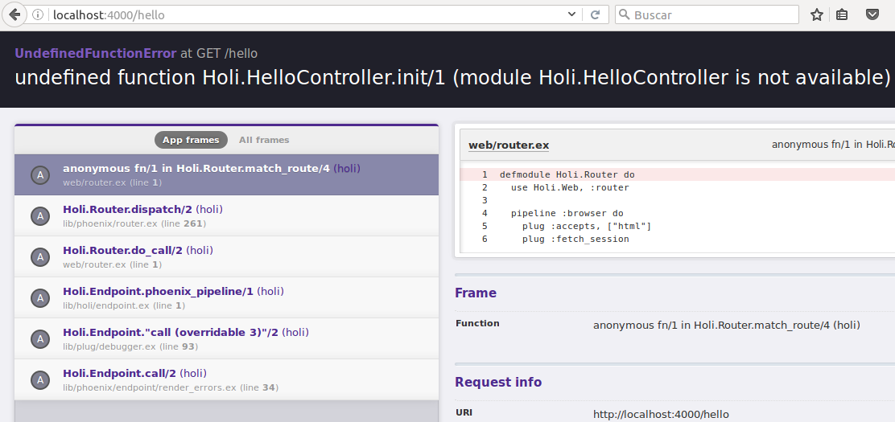

Todo por "Productividad |> Confiabilidad |> Rapidez"
mix phoenix.new holi --no-brunch *creating hello/config/config.exs Fetch and install dependencies? [Yn] y *running mix deps.get
Creamos un usuario con privilegios para crear bases de datos y configuramos nuestro proyecto para acceder a la base de datos con este usuario(Revisar 2da session), luego creamos la base de datos y servimos por el puerto 4000 con los siguientes comandos:
$ cd hello $ mix ecto.create $ mix phoenix.server
Crearemos una ruta "/hello", para eso nos ubicamos en el siguiente archivo:
#holi/web/router.ex scope "/", Holi do pipe_through :browser # Use the default browser stack get "/", PageController, :index end
scope indica que este grupo de rutas intentaran hacer coincidir todas las rutas en su inicio con /. El pipe_through :browser significa que todos los request que tengan rutas matcheadas en ese scope pasara por una serie de transformaciones comunes a request de navegadores (plug :accepts, ["html"])
Se puede observar una sola ruta que toma el request que se ve similiar a / y lo envia a la accion :index en el modulo PageController
Agregamos una routa hello y tendriamos la siguiente estructura:
get "/hello", HelloController, :world get "/", PageController, :index
El nuevo codigo hace que los request cuya ruta empieza con /hello sean enviadas a la funcion :world en el modulo HelloController

Obtenemos un error debido a que HelloController no existe.
#holi/web/controller/hello_controller.ex
defmodule Holi.HelloController do
use Holi.Web, :controller
def world(conn, _params) do
render conn, "world.html"
end
end
Este controllador es bastante simple.
user Hello.Web, :controller nos da acceso al API Controlador de Phoenix.
El enrutador ejecutara a la funcion world de nuestro controlador pasandole informacion que necesitaremos.
Nuevamente entramos al link http://localhost:4000/hello y podemos observar que nos mostrara el siguiente error:
undefined function Holi.HelloView.render/2 (module Holi.HelloView is not available)
Tenemos que crear el modulo Holi.HelloView.
Creamos el HelloView de la siguiente manera
#holi/web/views/hello_view.ex defmodule Holi.HelloView do use Holi.Web, :view end
Nuevamente entramos al link http://localhost:4000/hello observamos que existe un error:
Could not render "world.html" for Holi.HelloView, please define a matching clause for render/2 or define a template at "web/templates/hello".
Ya casi!!, ya casi!! Solo tenemos que crear e archivo hello.html.eex
#holi/web/templates/hello.html.eex <h1>Desde el template: Hello world!</h1>
Entramos al link http://localhost:4000/hello y podemos ver que el mensaje se cargo correctamente.
Ahora no tenemos informacion dinamica en nuestras rutas. Para poder hacer dinamicas a estas rutas usaremos Pattern Matching.
Reemplazaremos la ruta creada anteriormente en el archivo web/router.ex por lo siguiente:
get "/hello/:name", HelloController, :world
Con :name declaramos que se creara un parametro llamado :name en nuestra ruta por Pattern Matching y sera enviado al controlador designado.
Para esto modificaremos la funcion world que esta dentro de nuestro controlador de la siguiente manera:
def world(conn, %{"name" => name}) do
render conn, "world.html", name: name
end
El controlador envia name: name al View. name: name = en realidad es la siguiente tupla ={:name, name}. La vista internamente asigna la variable name al atomo :name.
Ahora nos toca usar el atomo :name dentro de nuestro template modificandolo de la manera siguiente:
<h1>Hello <%= String.capitalize @name %>!</h1>
Thank You ˊ・ω・ˋ